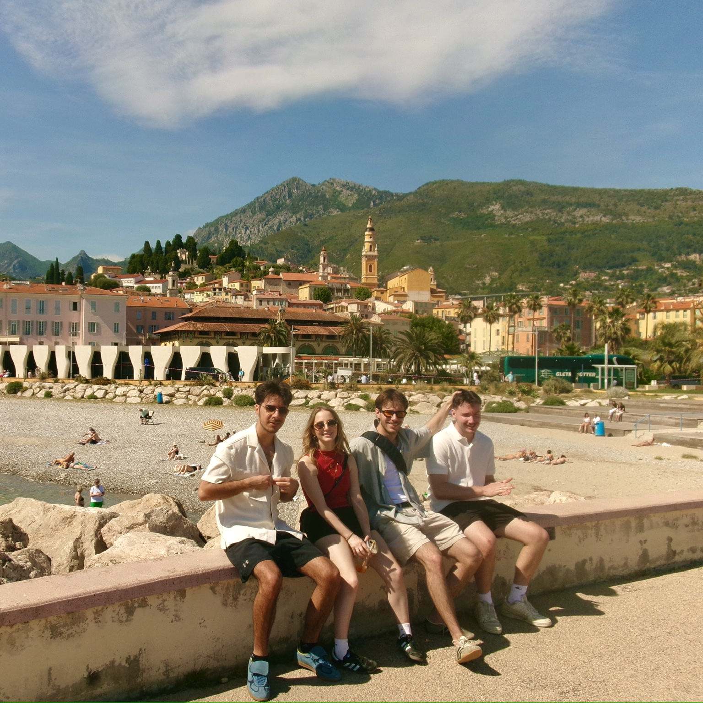
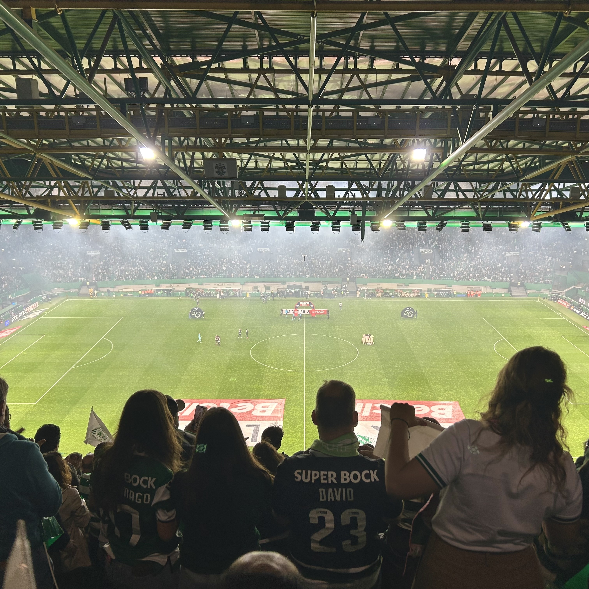
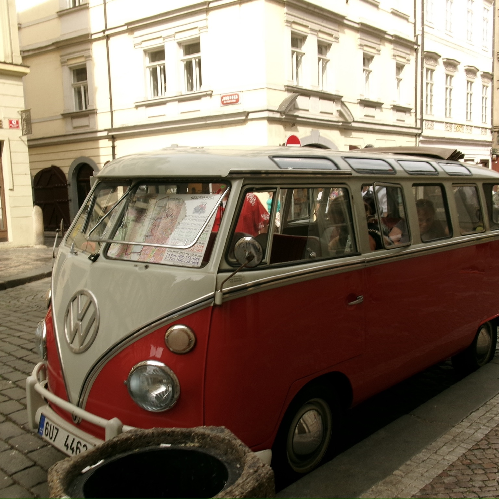
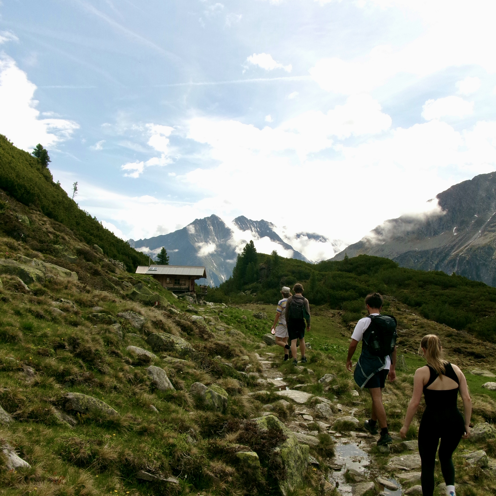
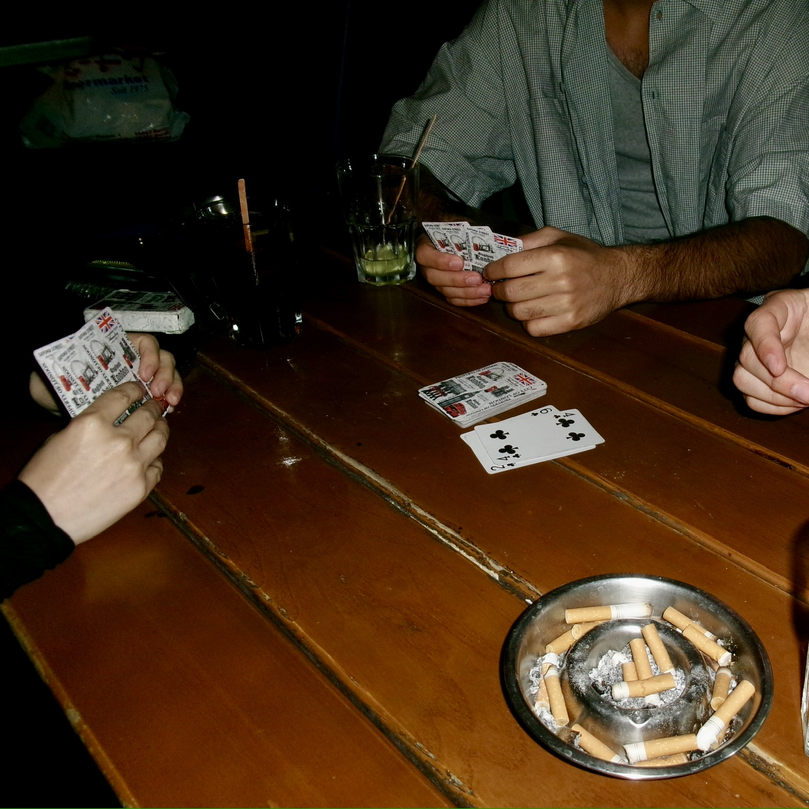

SeiSM
Use of State Space Models (SSMs), under the form of Mamba-2, as a partial solution to the complexity of the seismic prediction task, applied to the tasks of short-term and long-term predictions.
Paper (PDF)Bachelor in Data Science from the University of Montreal and currently a Master's student in ML affiliated with Mila, I am interested in the application of machine learning in the environment and sports. After more than a year as an agentic developer at KPMG Canada, I am now aware of the work required to implement automation solutions, which has led me to be interested in the importance of applying ML in a positive and responsible way.
Use of State Space Models (SSMs), under the form of Mamba-2, as a partial solution to the complexity of the seismic prediction task, applied to the tasks of short-term and long-term predictions.
Paper (PDF)Identification of collision profiles in Montreal by grouping accidents according to their characteristics and evaluation of clustering methods revealing latent distributions.
Paper (PDF)Lead the development of enterprise solutions integrating AI (agents/assistants), from software delivery to sprint planning and architecture, with direct client collaboration.
Relevant Coursework: Probabilistic Graphical Models, Representation Learning
Relevant Coursework: Data Science, Numerical Analysis, Machine/Statistical Learning, Advanced Project in ML, Sampling, Databases





like the photos (and the map) show, i love traveling and adventure. in fact, much of my work and motivation is aimed at financing my travels.
when i'm at home, in mtl, i try to be as outside as possible. whether it's for hockey, skiing, soccer, volleyball, rock climbing, or ...
in the cross-section of the two, i love being in nature, in the mountains, basically discovering what's out there.